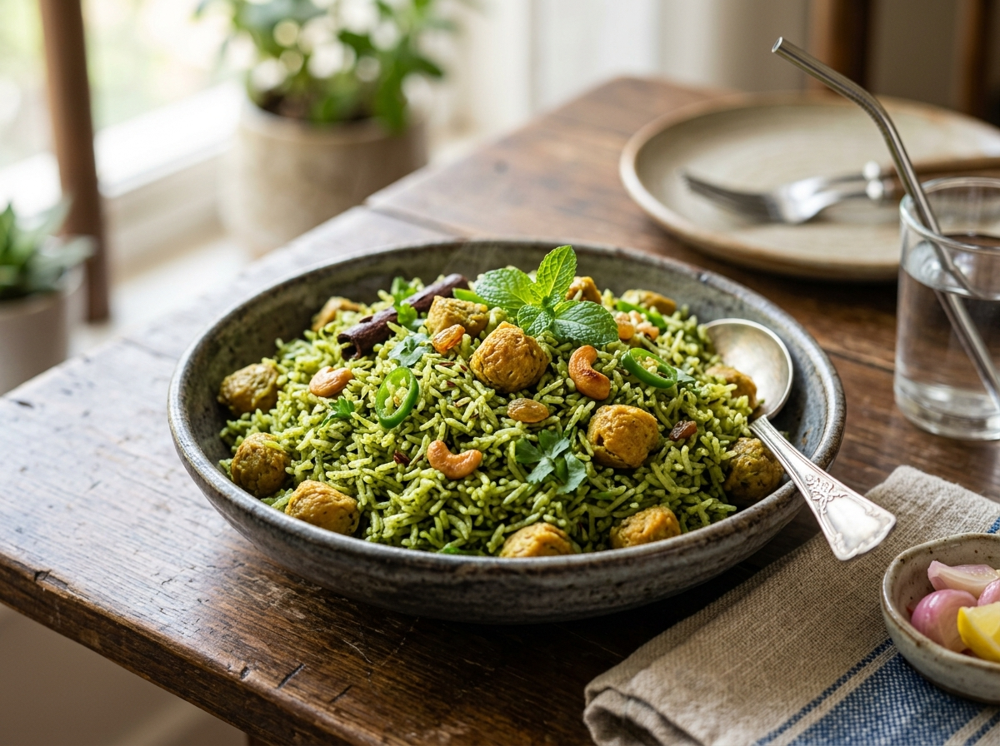

High Protein
Hariyali Soya Rice
A nutritious, aromatic one-pot meal made with soaked soya chunks, fresh mint-coriander paste, and fragrant basmati rice. Recipe by @joee_cooks.
Prep Time
10 mins
Cook Time
25 mins
Total Time
35 mins
Servings
3
Calories
505 kcal
Instructions
- Make the green paste: In a blender, combine coriander, mint, ginger, garlic, green chilli, cloves, cinnamon stick, cardamom pods, cumin seeds, fennel seeds, and 150 ml water. Blend until smooth and set aside.
- Sauté aromatics: Heat 2 tbsp oil in a pot over medium flame. Add chopped onion and soaked soya chunks. Sauté until the onion turns golden/dark brown (about 10 minutes).
- Cook paste: Add the blended green paste into the pot and cook until the raw aroma completely disappears.
- Season: Stir in garam masala and salt, mixing well with the soya chunks.
- Add rice and water: Pour in 500 ml water and add the washed basmati rice. Mix gently and bring the mixture to a rolling boil.
- Simmer: Once boiling, sprinkle a handful of fresh coriander on top. Cover tightly with a lid, reduce heat to low, and cook for 25 minutes.
- Fluff and serve: Turn off heat, fluff the rice gently with a fork, and serve warm. 🌿🍚